© Diptyque, official product imagery
© Diptyque, official product imagery01 / 法国 / EST. 1961
Diptyque
蒂普提克 · 把旅行、植物与记忆装进椭圆瓶中
从巴黎艺术家开设的小店出发，Diptyque把绘画般的瓶标、旅行记忆与香气放在一起。Tam Dao以木质气息为入口，适合先认识它安静、富于画面感的一面。
品牌故事与时间线 ↗A FIRST ENCOUNTER
75 ml
Sandalwood / Cedar / Cypress
Tam Dao gives a woody fragrance wardrobe a particularly clear point of reference.
US$260 USD · before tax
Official U.S. product page · checked 27 October 2026
Photographs & design notes ↗ © Le Labo, official product imagery
© Le Labo, official product imagery02 / 美国 / EST. 2006
Le Labo
勒莱柏 · 让每一张标签，记录人与香气的相遇
Le Labo将实验室与手工贴标作为品牌语言。先从Santal 33认识木质、辛香与柔和花香交错的表达，再去阅读那些像配方编号一样的作品名称。
品牌故事与时间线 ↗A FIRST ENCOUNTER
100 ml / 3.4 fl. oz.
Sandalwood / Cardamom / Iris & Violet
SANTAL 33 is a useful way to explore the space between woods, spice and soft floral notes.
US$348 USD · before tax
Official U.S. product page · checked 27 October 2026
Photographs & design notes ↗ © Byredo, official product imagery
© Byredo, official product imagery03 / 瑞典 / EST. 2006
Byredo
百瑞德 · 把记忆与情绪，放进一只气味容器
Byredo常以记忆与情绪作为气味起点，简洁瓶身留出想象空间。Bal d’Afrique把明亮花香与柔和木质放在一起，是认识这个瑞典品牌的一个入口。
品牌故事与时间线 ↗A FIRST ENCOUNTER
100 ml
Bergamot / Violet / Cedarwood & Vetiver
Bal d’Afrique gives a fragrance wardrobe a lively floral and woody direction.
US$330 USD · before tax
Official U.S. product page · checked 27 October 2026
Photographs & design notes ↗ © Baccarat / Maison Francis Kurkdjian, official product imagery
© Baccarat / Maison Francis Kurkdjian, official product imagery04 / 法国 / EST. 2009
Maison Francis Kurkdjian
MFK 香氛 · 以调香师的手笔，描写法式香氛衣橱
从调香师的气味衣橱观念出发，MFK让不同香水对应不同心情。这里以常规版Baccarat Rouge 540浓香水，认识花香、琥珀与干燥木质之间的平衡。
品牌故事与时间线 ↗A FIRST ENCOUNTER
70 ml / 2.4 fl.oz.
Jasmine / Saffron / Ambery Woods
Baccarat Rouge 540 connects perfume with the visual language of crystal.
US$360 USD · before tax
Official page snapshot · reported crawled the same day; reviewed 27 October 2026
Photographs & design notes ↗ © Jo Malone London, official product imagery
© Jo Malone London, official product imagery05 / 英国 / EST. 1994
Jo Malone London
祖玛珑 · 把英伦日常，写成可以叠搭的气味
Jo Malone London把花园、果实与英伦海岸写进香水，也鼓励探索气味叠搭。鼠尾草与海盐以清新木质气息，提供一个轻松而清楚的起点。
品牌故事与时间线 ↗A FIRST ENCOUNTER
100 ml
Ambrette Seed / Sea Salt / Sage
Wood Sage & Sea Salt brings a coastal idea into a restrained rectangular bottle.
US$175 USD · before tax
Official page snapshot · reported crawled the same day; reviewed 27 October 2026
Photographs & design notes ↗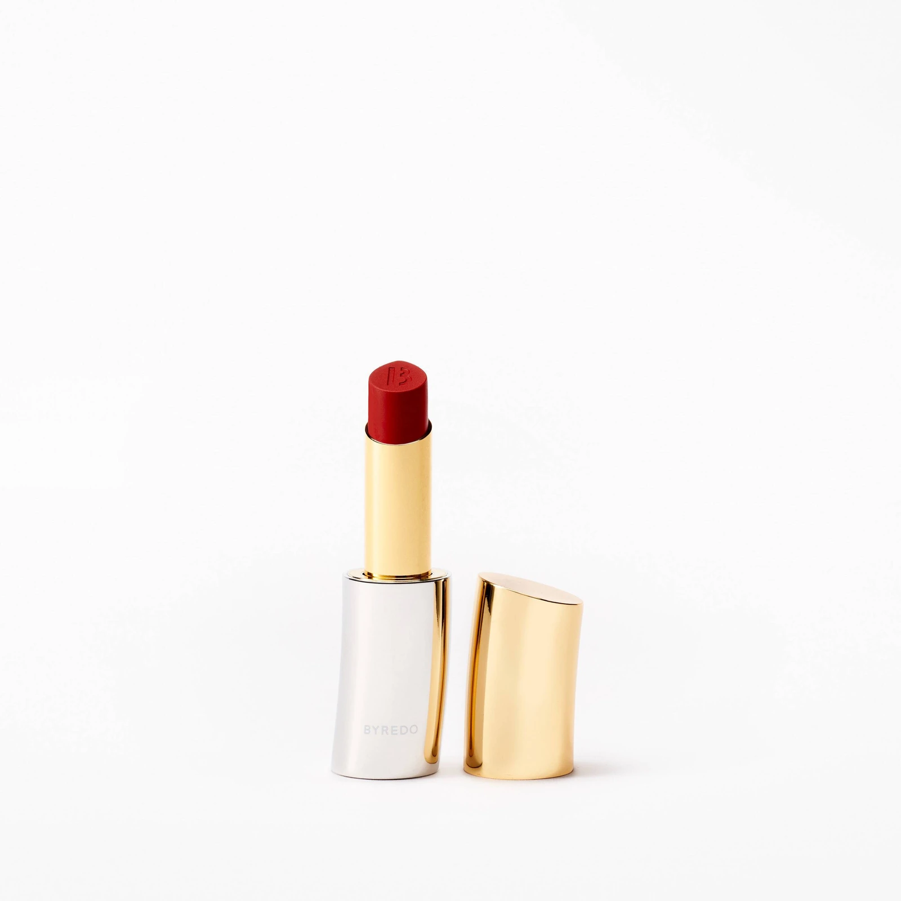
Byredo 官方图 ↗Lipstick Satin
弧形金银管
金银色外壳采用偏斜、带弧度的雕塑式轮廓，开盖后仍保留不对称的视觉关系。同壳的其他色号和妆效合并为文字。
图示参考：Redolence
同壳其他版本 · 合并查看
Lipstick Satin · Earth Dust / Lipstick Matte · Septembre
 CHANEL 官方图 ↗
CHANEL 官方图 ↗ROUGE ALLURE
黑金方管
黑色方形管盖配金色内管，整体线条简洁，打开后形成鲜明黑金对比。代表色只用于识别图中这一支，不另列同壳色号卡。
图示参考：212 Caractère
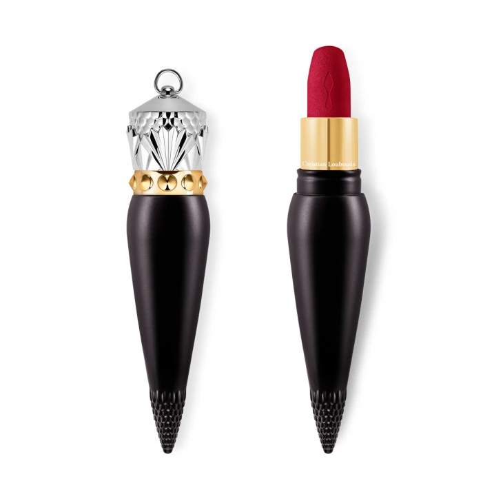
Christian Louboutin · 官方商品图 ↗Rouge Louboutin Velvet Matte
黑色雕塑管与皇冠盖
黑色管身向底端收尖，皇冠式管盖与顶端小环带来吊饰感，金色内管露出后形成层次。
图示参考：Rouge Louboutin 001M · matte · 3.8 g
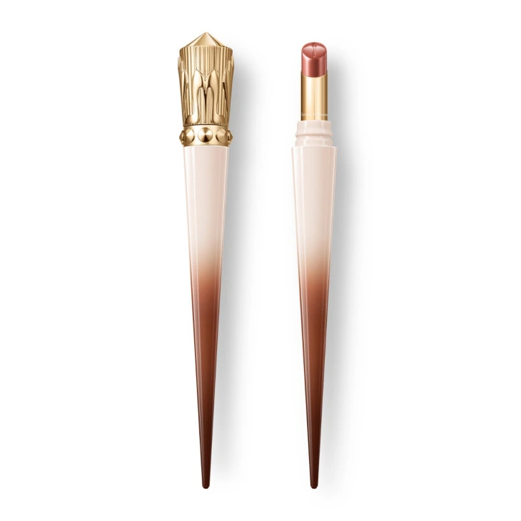
Christian Louboutin · 官方商品图 ↗Rouge Stiletto Les Nudes
裸色渐变细尖管
细长尖形管身以裸色渐变漆面呈现，配金色调尖饰管盖，轮廓呼应高跟鞋的修长线条。
图示参考：Nude 2N · shine
 Dior · Heinemann 商品图 ↗
Dior · Heinemann 商品图 ↗Rouge Dior
黑银方管
黑色宽方管配银色内管与 CD 标识，容器以方正轮廓和黑银对比形成辨识度；同一外壳的其他色号与妆效合并展示。
图示参考：743 Rouge Zinnia · satin
同壳其他版本 · 合并查看
Rouge Dior · 999 · velvet / Rouge Dior · 720 Icone · satin / Rouge Dior · 100 Nude Look · satin
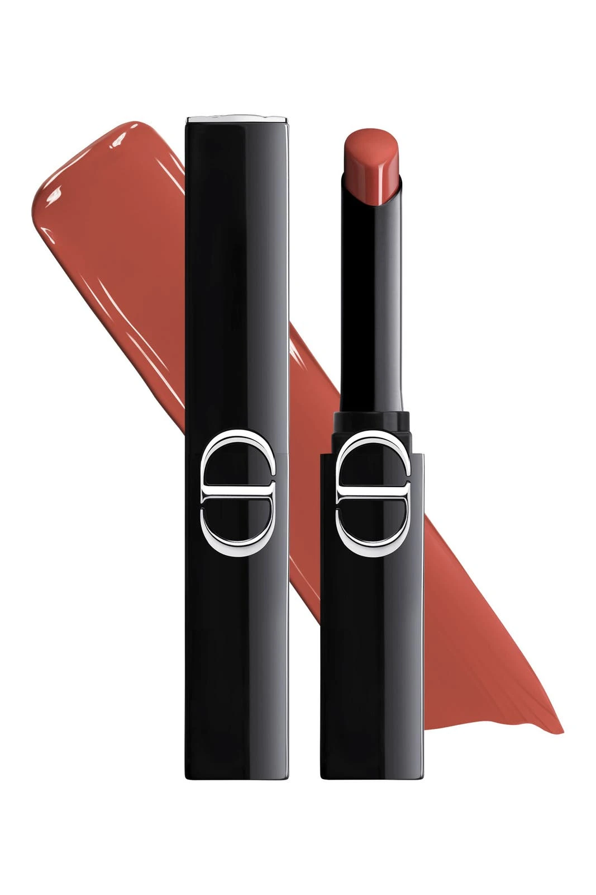
Dior · Nordstrom 商品图 ↗Rouge Dior On Stage
纤长黑银管
黑色外壳与银色 Dior 字样构成纤长轮廓，开盖后露出细管与斜切膏体；相较 Rouge Dior 的宽方管，更接近一支修长的笔。
图示参考：168 Copper Attraction · shine · 2.2 g
 Gucci · Harrods 商品图 ↗
Gucci · Harrods 商品图 ↗Rouge à Lèvres Mat
罗纹红色圆管
红色罗纹管盖配金色内管，凹凸表面与低调的 Gucci 字样形成细节。这里保留一支代表色，与同品牌花卉及雕花外壳分别比较。
图示参考：509 Rosso Ancora
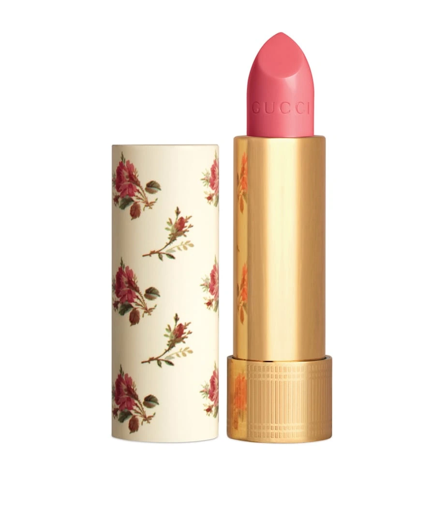
Gucci · Harrods 商品图 ↗Rouge à Lèvres Voile
花卉图案圆管
奶白色管盖以花卉图案装饰，搭配金色内管，视觉上带有复古瓷器般的气质。看点是图案外壳，而非把每个色号单独陈列。
图示参考：410 No More Orchids
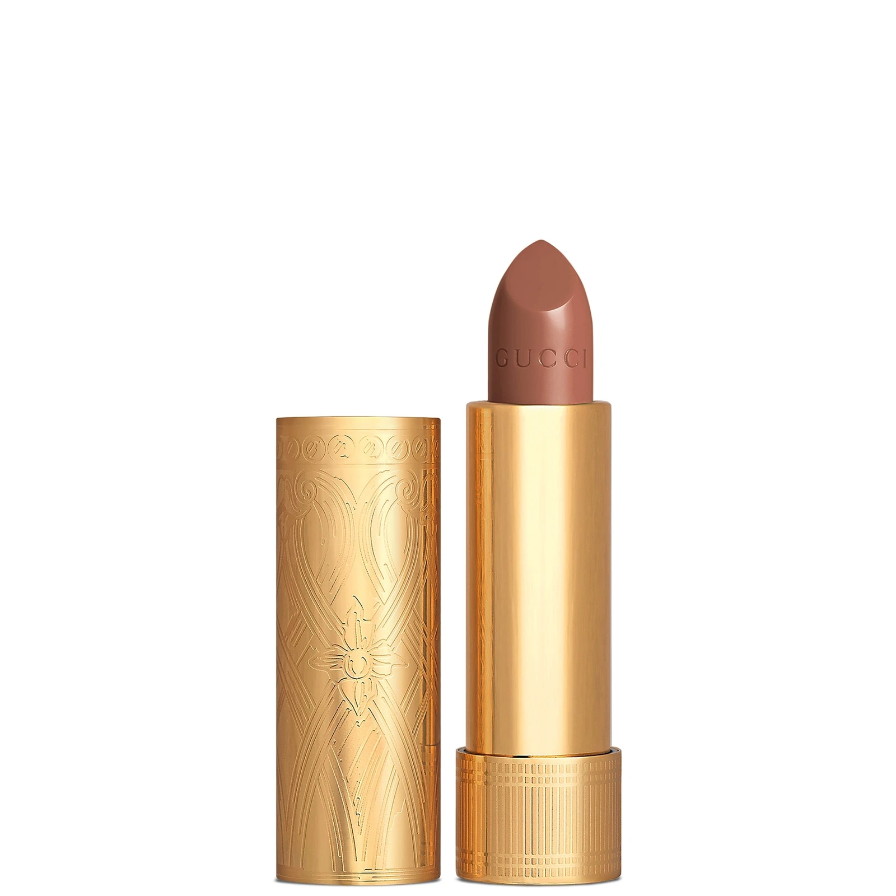
Gucci · Cult Beauty 商品图 ↗Rouge à Lèvres Satin
雕花金色圆管
金色圆管以雕花表面形成复古装饰感，开盖后可看到金色内管。它与 Gucci 的红色罗纹壳、花卉壳采用不同表面设计。
图示参考：220 Suzanne Sunset
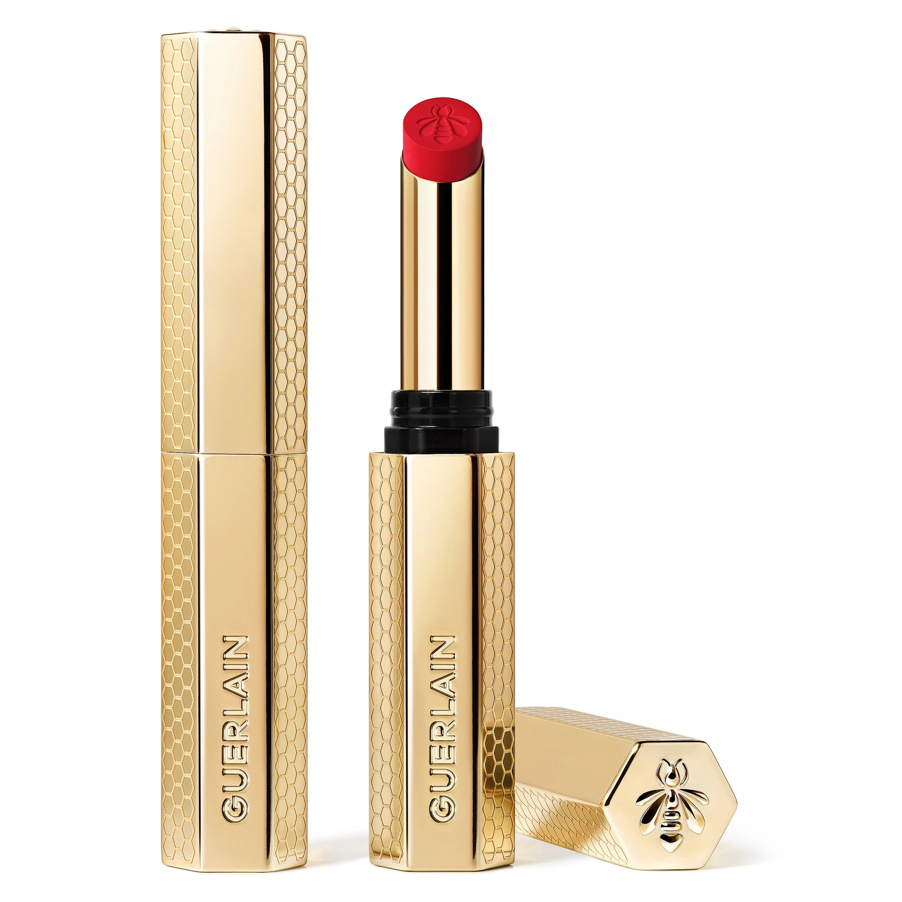
Guerlain · Shilla Duty Free 商品图 ↗KissKiss Honey-Infused Intense Lipstick
细长雕塑感金管
金色细管保留 KissKiss 的雕塑感起伏，开盖后以窄膏体与长管身形成修长比例。这里展示新一代细长容器，其他色号合并看待。
图示参考：510 Petal Red · blur matte · 1.85 g
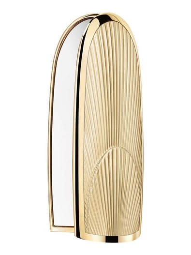
Guerlain · Heinemann 商品图 ↗Rouge G · L’Art Déco
Art Déco 双镜盒
雕花金色外壳展开后呈现双面镜，将口红变成可随手补妆的小镜盒。图片重点展示外壳；所列正装组合包含这一外壳与 510 缎光膏体。
图示参考：L’Art Déco case + 510 Le Rouge Vibrant · satin · 3.5 g
- 正装 · USD
- US$87 ↗含图示外壳与膏体 · 官方分售金额合计 复核
 Hermès 官方图 ↗
Hermès 官方图 ↗Rouge Hermès Matte
白黑金拼色圆管
白、黑与金色的分段圆管是这张卡片的重点。不同色号和妆效沿用相同的基础容器，因此归在同一张卡中。
图示参考：23 Beige Doblis
同壳其他版本 · 合并查看
Rouge Hermès Satin · 18 Rose Encens / Rouge Hermès Silky Lipstick Shine · 12 Beige Midi / Rouge Hermès Satin · 40 Rose Lipstick
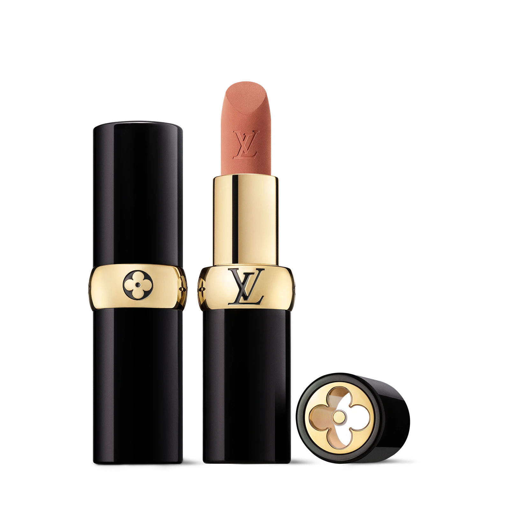
Louis Vuitton · 官方商品图 ↗LV Rouge Matte Lipstick
Monogram 金属圆管
金属圆管以 Monogram Flower 标识与金色环节组合，图中同时展示管盖与开盖后的内管。品牌将其描述为可保留并更换膏体的容器。
图示参考：103 Vanity Beige · matte
 Prada 官方图 ↗
Prada 官方图 ↗Monochrome Soft Matte
银色三角环方管
银色方管以三角形横环围住腰部，标识与几何轮廓成为主要细节。同样容器结构的其他色号与哑光版本合并展示。
图示参考：B106 Caramel
同壳其他版本 · 合并查看
Monochrome Soft Matte · B107 Sedona / Monochrome Hyper Matte · B13 Marron / Monochrome Soft Matte · P158 Meranti
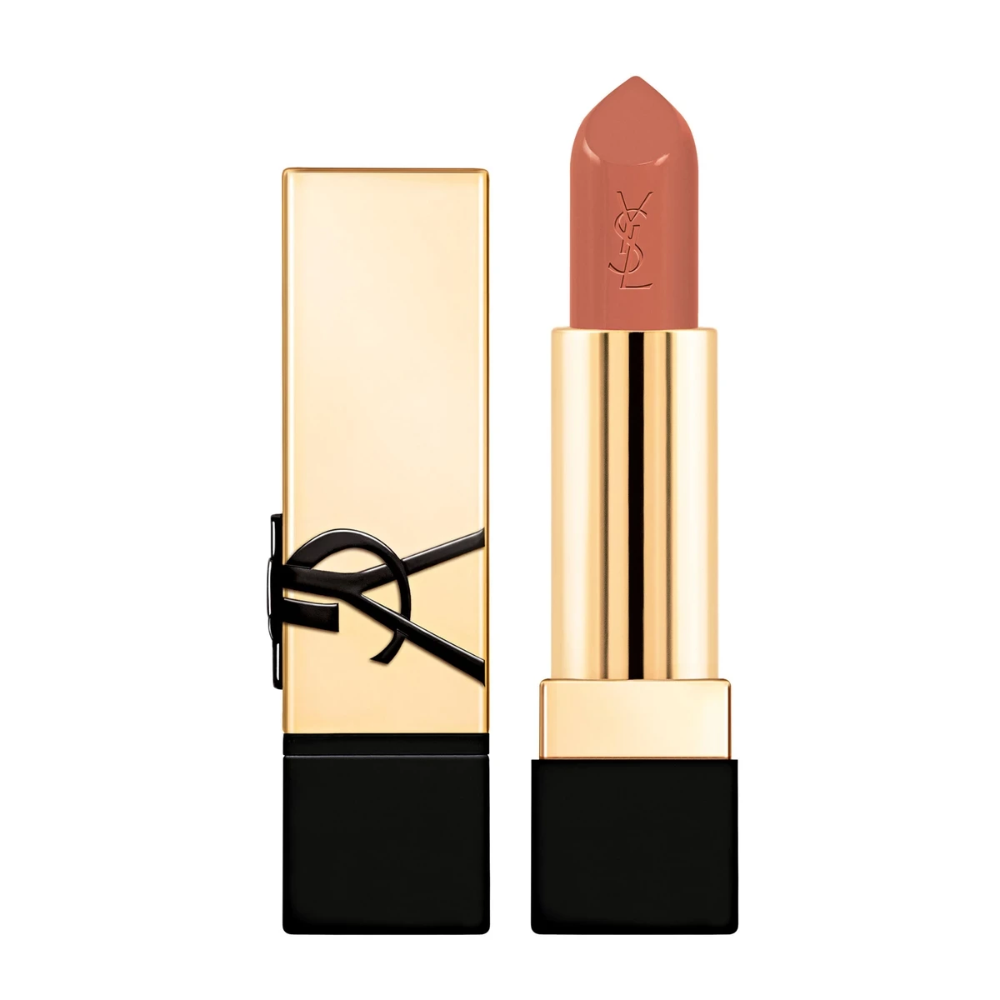
YSL Beauté 官方图 ↗Rouge Pur Couture Caring Satin
Cassandre 方管
金色管盖上的黑色 Cassandre 标识与黑色管底相连，构成方正外壳；开盖后可见金色内管，和 Loveshine 的银色圆管分别展示。
图示参考：NM Nu Muse
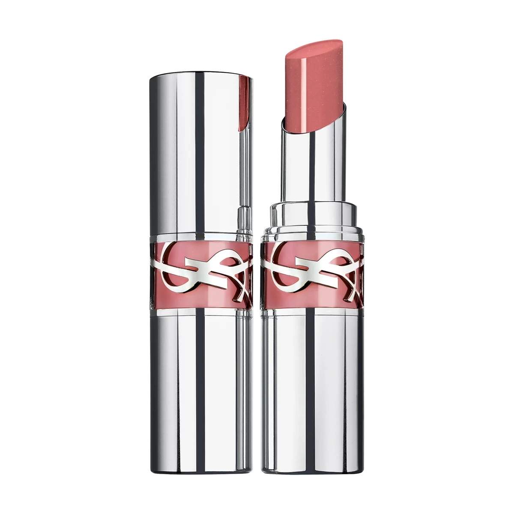
YSL Beauté · 官方商品图 ↗YSL Loveshine Lip Oil Stick
银色 Cassandre 圆管
镜面银色圆管以立体 Cassandre 标识环绕腰部，图示为浅色标识环版本。圆柱外形与 Rouge Pur Couture 的方形外壳形成区别。
图示参考：150 Nude Lingerie
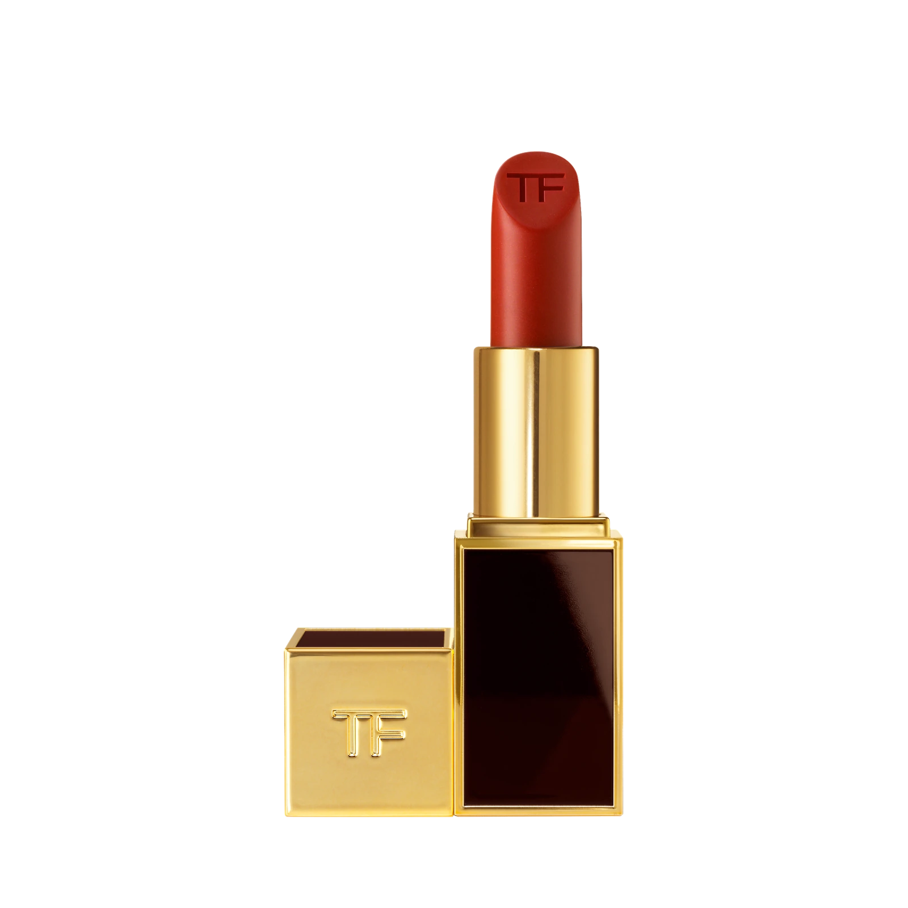
Tom Ford Beauty · 官方商品图 ↗Runway Lip Color
黑金方管
黑色方形外壳以金色边框收边，管盖与膏体上可见 TF 标识，开盖后露出金色内管。
图示参考：16 Scarlet Rouge · satin · 3.5 g
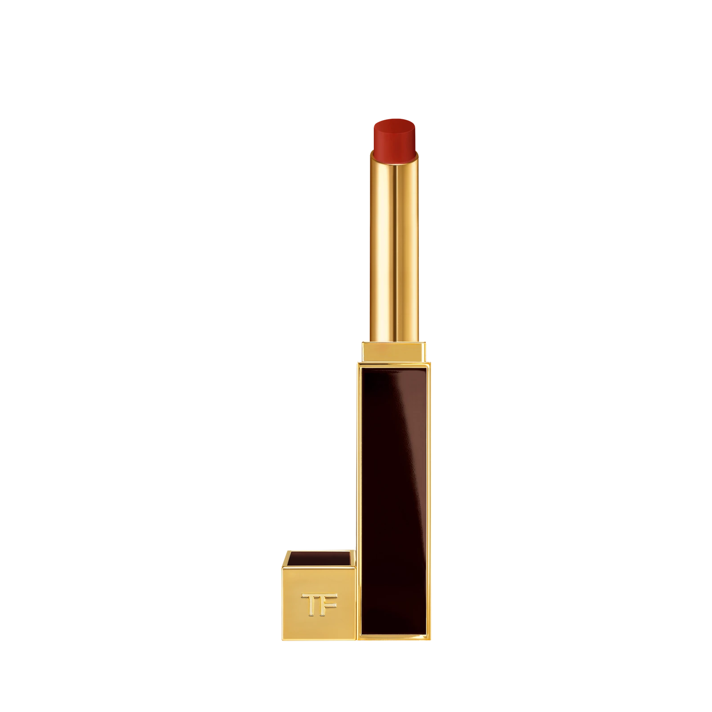
Tom Ford Beauty · 官方商品图 ↗Runway Lip Stylo Matte
纤长黑金方笔管
细长方笔管以黑色侧板、金色边框与 TF 管盖标识呈现，管身比例比 Runway Lip Color 方管更修长，露出的膏体也更纤细。
图示参考：16 Scarlet Rouge · matte · 2.0 g
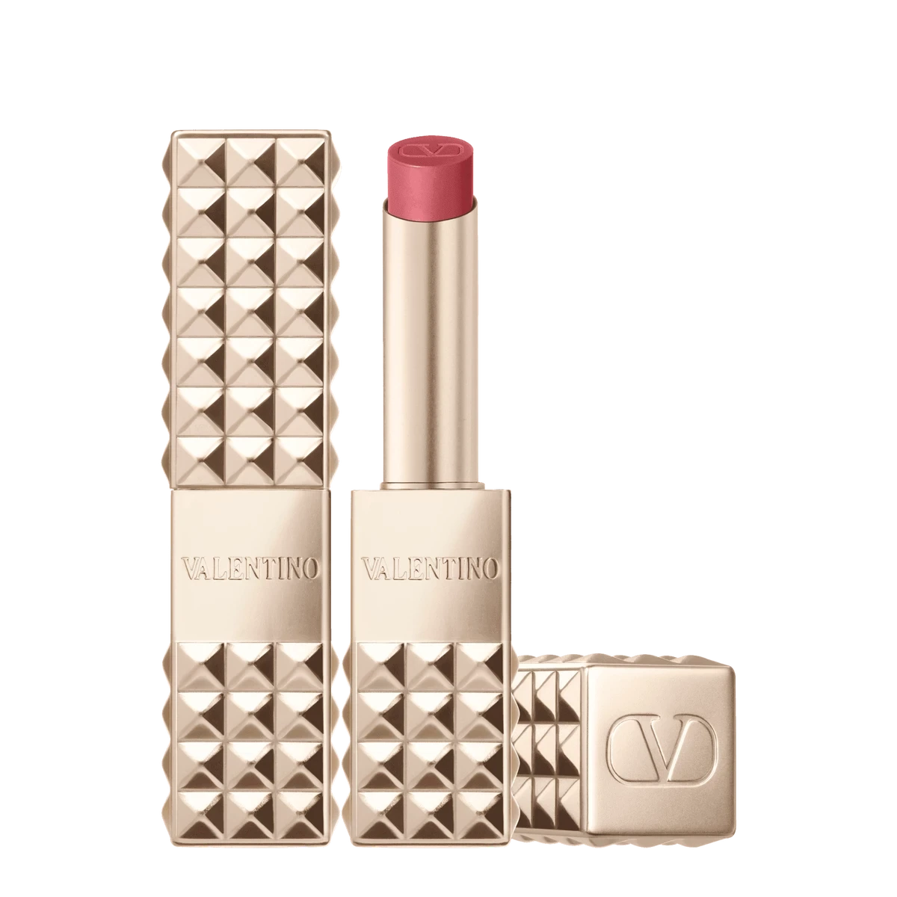
Valentino Beauty · 官方商品图 ↗Spike Valentino Buttery Matte Lip Color
立体铆钉金色管
金色调外壳布满立体铆钉，平滑的中段与两端凹凸纹理相接，视觉重点落在容器表面。
图示参考：100R Stand Out In Nude · matte
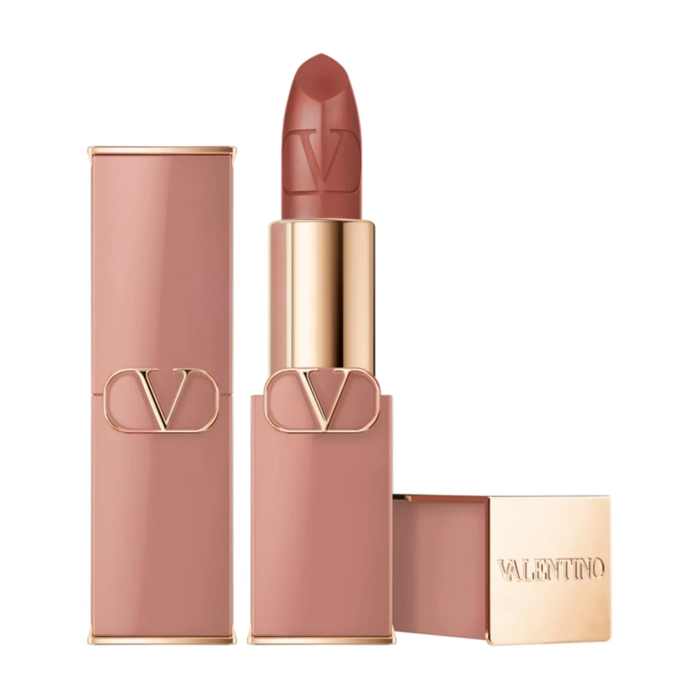
Valentino Beauty · 官方商品图 ↗Rosso Valentino Satin Lipstick
粉调圆管与 V 标识
柔和粉调的平滑圆管搭配金色 V 标识；同色管盖与金色内管形成简洁的色块组合。
图示参考：113R Nude Caress · satin
先看容器。把花卉外壳、雕花金管、双镜盒与铆钉管放在一起比较。相同外壳的其他色号只作文字补充，图中色号用于辨认所示版本。
再看完整正装价格。价格对应所列包装。需要自选外壳与膏体的产品，会注明完整组合的价格口径；套装、迷你装和单独外壳不作为一整支口红比较。
把价格当预算线索。这些是逐项注明日期的官网参考；价格差本身不能说明妆效或适合程度。点击价格查看来源，展示颜色以实物为准。